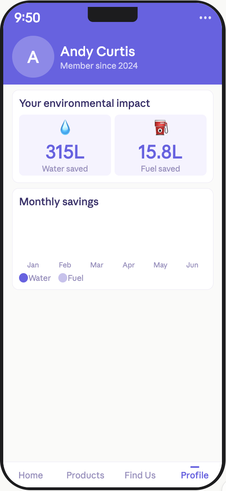

Mobile app
UX Design
Vue.js
2024
Ithaca Soap App
A mobile shopping experience helping eco-conscious college students discover local, sustainable soap products — without sacrificing convenience or price transparency.
Problem statement
The challenge
Many eco-friendly soap companies struggle to engage modern consumers who value sustainability but prioritize convenience and affordability. Ithaca Soap needed a digital presence that could meet students where they are — on their phones, on a budget, and short on time.
"How might we help eco-conscious college students discover and purchase local, sustainable products without feeling like they have to compromise on price or convenience?"
Client goals
What success looks like
🌱
Build eco-interest
Maintain business while building interest in eco-conscious products among college students.
📚
Educate users
Share content that debunks greenwashing and builds trust in the brand.
♻️
Retain customers
Keep customers coming back through quality products and sustainability messaging.
🎓
Reach students
Reach transient college users through short, usage-focused media.
User insights
What we learned
We interviewed and observed student shoppers to understand their priorities. The research surfaced a clear tension: students cared most about scent, ingredients, and skin comfort — eco-friendliness was a secondary factor when it conflicted with price or convenience.
This meant the app couldn't lead with sustainability messaging — it had to lead with product quality and make the eco angle feel like a bonus, not a burden.
Persona
Who we designed for
👨🎓
Andy Curtis
Cornell junior · sensitive skin · limited budget
- Seeks affordable, gentle soap that won't irritate his skin
- Prefers local, time-saving shopping options
- Supports sustainability when it fits his convenience
Design goals
Our north stars
With the persona and research in hand, we defined four design goals to guide every decision:
🤝
Trustworthy presence
Create a modern, credible digital presence for Ithaca Soap.
🛍️
Simple discovery
Simplify the path from product discovery to purchase.
🌿
Eco-impact metrics
Highlight environmental impact to reinforce sustainable behavior.
📍
Local shopping
Provide localized options for users without online shopping preferences.
Design process
How we built it
1
Wireframes
Created wireframes for six key views — Home, Products, Product Details, Cart, Find Us, and Profile. Each view focused on clarity and logical navigation via the Router.
Figma · low-fi
2
Component system
Built as a Vue.js app with reusable components and a local cart system using localStorage. Interactive product cards featured a smooth tag-based filter system.
Vue.js · localStorage
3
Visual language
Chose natural, earthy tones and plant-based icons to reinforce sustainability messaging, while maintaining accessibility and legibility across all device sizes.
Tailwind · responsive
Major screens
The final product
Four key screens that cover the core user journey — from discovering products to finding a local distributor.

Profile & Impact